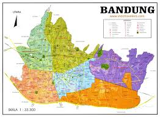

SEJARAH
Kota Bandung, awalnya sebuah kabupaten, berkembang menjadi pusat pemerintahan dan kota yang ramai. Awalnya, pusat pemerintahan kabupaten Bandung berada
di Krapyak (sekarang Dayeuhkolot), tetapi dipindahkan ke lokasi baru yang strategis di tepi Sungai Cikapundung, dekat Jalan Raya Pos (sekarang Jalan Asia Afrika)
pada awal abad ke-19. Pemindahan ini dipercepat oleh perintah Gubernur Jenderal Hindia Belanda, Herman Willem Daendels, pada tahun 1810, yang menjadikannya hari
jadi kota Bandung.
GEOGRAFIS

Kota Bandung terletak pada posisi 107º36’ Bujur Timur dan 6º55’ Lintang Selatan. Luas wilayah Kota Bandung adalah 16.729,65 Ha.
Perhitungan luasan ini didasarkan pada Peraturan Daerah Kotamadya Daerah Tingkat II Bandung Nomor 10 Tahun 1989 tentang Perubahan
Batas Wilayah Kotamadya Daerah Tingkat II Bandung sebagai tindak lanjut dari Peraturan Pemerintah Nomor 16 Tahun 1987 tentang Perubahan
Batas Wilayah Kotamadya Daerah Tingkat II Bandung dengan Kabupaten Daerah Tingkat II Bandung.
WISATA

Bandung menawarkan berbagai pilihan tempat wisata menarik. Beberapa di antaranya adalah Jalan Braga, Dusun Bambu, Bukit Moko, dan Tebing Keraton yang
menawarkan suasana kota dan pemandangan alam yang indah. Selain itu, ada juga Taman Hutan Raya Ir. H. Djuanda, Orchid Forest Cikole, dan Kampung Cai Ranca
Upas yang cocok untuk pecinta alam.
Bocha
Bosscha bersama Nederlandsch-Indische Sterrenkundige Vereeniging adalah observatorium astronomi modern pertama di Asia Tenggara.
Dengan itu sains astronomi di Bumi Nusantara memulai kontribusi internasional pada pengembangan astrofisika dalam topik bintang, Tata Surya, dan galaksi.
Gedung sate
Gedung Sate adalah sebuah bangunan bersejarah yang terletak di Kota Bandung, Jawa Barat. Gedung ini dikenal sebagai kantor Gubernur Jawa Barat dan juga sebagai
salah satu ikon Kota Bandung. Nama "Gedung Sate" sendiri berasal dari ornamen khas di puncak gedung yang menyerupai tusuk sate, yang melambangkan biaya
pembangunan gedung tersebut.